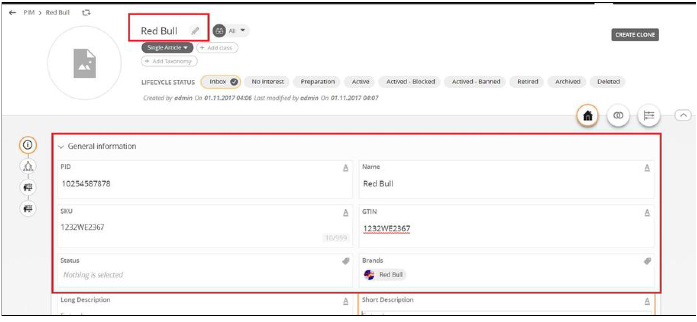

PROD-3: Manage Individual Articles¶
The Individual Articles are called as ‘Single Article’ in the system. This ‘Single Article’ will only be a single item.
2. Go to PIM¶
Once the ALL icon is clicked, there should be additional tabs below the navbar, including the PIM tab.

3. Click on the ‘+’ icon and select SINGLE ARTICLE¶

4. Give it a name and fill some information¶
5. Go to the relationship tab to add an image¶

6. Click on the plus icon to add an image¶

7. Select the image and click on add button or drag and drop the image to the right¶

8. Image is added to the product¶

9. Similarly markets, related products can be added via relationship¶

10. Your Single Article¶